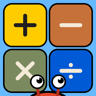
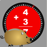
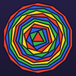

PLUed
Trains grocery cashiers on produce PLU codes with spaced repetition and a verified code library.
A studio that finishes things
Arbolinea designs and builds apps, and makes objects in the workshop. We use AI tools all day, the way a woodworker uses a table saw: they do the heavy lifting, we decide what the thing should be. Then the part we care about most, getting it right the first time, or in far fewer tries.
Ideas above the treeline
Software
Taken through the stores properly, and maintained for real users.
Trains grocery cashiers on produce PLU codes with spaced repetition and a verified code library.

Math practice built to keep kids playing. A crab runs a pier over the sea, and a parrot drops a plank across each gap as the problems get answered. No ads, no accounts, nothing collected.

Arithmetic drilling that rewards speed and accuracy. Built in 2012 to help kids get more confident with basic arithmetic, and in the stores for over a decade until it was pulled for being out of date. We are rebuilding it from the ground up.

A merge puzzle game built from regular polygons.
Physical
AI helps design and engineer each piece, and the shop builds it by hand. The saw is built. The cajon is still a model.
A box drum, designed and engineered with AI. It will be cut and assembled by hand from Baltic birch.
A bucksaw that folds into itself: two handles, a stretcher, a blade, and a cord tightened by a toggle. Folded, it fits a canvas pouch. We built it in the shop, and the product photos and copy were made with AI.
The practice
These tools are part of every day here. Using them well is a craft of its own, and it is the part we work hardest at.
We keep several AI tools running and move between them depending on the work. One writes better prose, another is stronger at code, another is cheaper for a long research pass. Which one is best changes month to month, so we keep testing the new ones as they ship and we watch what each one costs.
A skill is a set of reusable instructions that teaches an AI tool how we design, write and build, so we are not starting from scratch every time. Writing a good one is instructional design for a machine, and it takes the same care. We keep ours and refine them as the work teaches us something.
The product and the interface get the same treatment as the code, and so does a physical piece. The cajon is the plainest example: AI helped design and engineer it, and the cutting and assembly will be done by hand. The same goes for the brand assets and for this page.
The studio comes out of nearly thirty years in training and data analysis, so when an app teaches something we use what works. PLUed drills produce codes with spaced repetition, because spaced practice is how codes like these stick. Crab Math Run never ends a run on a miss in its default mode, because a kid who is afraid of being wrong can stop trying.
We start by finding out whether the idea deserves the money: what already exists, where you differ, what it would take. Nearly every project starts as a website, the cheapest way to find out if an idea is real. The few that need more become apps, and we take them properly through the App Store, Google Play and the Amazon Appstore.
App development
Maybe you have carried an idea around for years. Having the idea was never the problem. Making it real is. That used to run into three hard questions. How do I build it? Who do I pay if I cannot? How long would it take to learn?
AI took those barriers down. What remains is finishing, and finishing is what we do. Two ways to work together, each one ending with something you can use without us.
01
Honest validation first: what already exists, where you differ, and whether the idea deserves the money. Then we design it, build it, ship it, and hand you something you can maintain with AI at low cost, sometimes even on a free tier.
02
Modernize an aging app, make it cheap to maintain, and hand your team the method so the next round does not need us.
What we hold
we will not pretend
On the tool
Ideas come easy now. The machine can generate them, design the piece, and suggest a better one. We will not pretend it cannot. We also will not pretend we have its memory or its speed. What we have are wants: we know what we like, we know the future we want, and we build what makes us and others better. The machine has no wants. We do. So when we say AI, we mean exactly what an engineer means by a calculator, or a woodworker means by a table saw. A tool.
On the market
The tool is not free. There is a monthly bill, and a harder question under it: which one? Grok, Codex, Kimi, Claude, all of them, or whatever ships next week? Then which model, which mode, which plan? Is the new one better? Better at what: writing, code, price? The answers change month to month, sometimes day to day. We watch the landscape constantly and pick what fits the work. We will not pretend that choice is settled. It never stays settled.
On platforms
Nearly every project starts as a website: the cheapest, fastest way to find out if an idea is real. Most never need to be more than that. The few that do, we build as apps you install from the App Store, Google Play, or the Amazon Appstore, and we take them through those stores properly.
The studio
arbor + linea
the tree line
Arbolinea started with a problem - a math homework problem. In 2012 Clay Elmore built the company's first app, Timed Math, to help his kids be more confident with their basic arithmetic skills.
He spent nearly thirty years in training and data analysis, including learning programs at Nokia, where his work included launch calendars, the learning platforms, content reviews, testing with real users, translation, and dashboards that tracked who finished and what they thought of it. He has also taught people the basics of using AI tools and writing prompts. It is where the studio's instinct for teaching comes from, and it is the same instinct we use when we write a skill for an AI tool.
He is also a woodworker and a lifetime outdoorsman. The treeline in the name is a real place. It is the line where the trees stop and the view begins. He first saw that view on a summit attempt on Longs Peak, in Colorado. When you cannot see the forest for the trees, get above them. Every project since has started the same way. With a problem worth solving.
Write to us and say what the idea is. We will tell you honestly whether it is worth building, and what it would take.